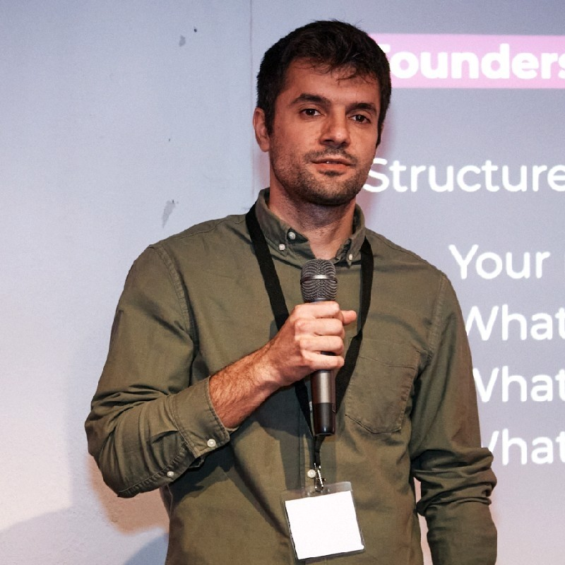

I am currently Senior Data Scientist @ CARIAD SE (Volkswagen Group). We are building exciting tools for data scientists, computer vision, NLP, systems security, and beyond.
My interest in both research and engineering cover the areas of: (1) deep anomaly detection, (2) intrusion detection, (3) AI for software engineering, (4) applications, primarily in terms of vehicle data models, NLP, temporal models, and modeling data at scale, which is a great source of inspiration.
Biography
-
I did a Ph.D. in Computer Science at Technical University of Berlin supervised by Prof. Dr. Odej Kao, where I also did a M.Sc. in Computer Science.
Research highlights
- Deep Anomaly Detection in Distributed Software Systems PhD Thesis @ TU Berlin 2021 paper
- Self-Attentive Classification-Based Anomaly Detection in Unstructured Logs ICDM 2020: IEEE International Conference on Data Mining (ICDM) 2020 paper
- Self-Supervised Anomaly Detection from Distributed Traces UCC 2020: IEEE/ACM International Conference on Utility and Cloud Computing 2020 paper
- Self-Supervised Log Parsing ECML-PKDD 2020: European Conference on Machine Learning and Principles and Practice of Knowledge Discovery in Databases 2020 paper
- Anomaly Detection from System Tracing Data using Multimodal Deep Learning CLOUD 2019 : IEEE International Conference on Cloud Computing (affiliated with IEEE SERVICES 2019) 2019 paper
- Anomaly Detection and Classification using Distributed Tracing and Deep Learning The 19th Annual IEEE/ACM International Symposium in Cluster, Cloud, and Grid Computing (CCGrid 2019) 2019 paper